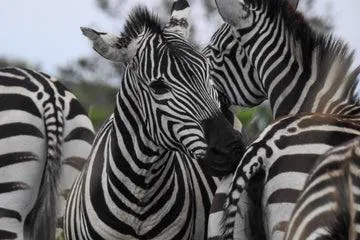
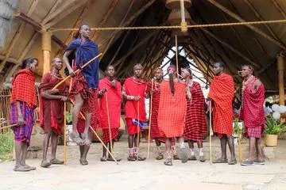
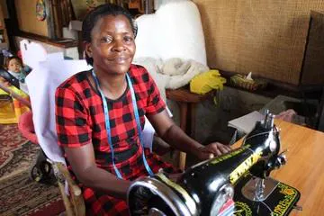

Atelje usred divljine
Živimo i stvaramo u nesvakidašnjim uslovima, okruženi divljinom, pticama i zaštićenim životinjama koje slobodno prolaze pored ateljea dok radimo.

Naš moto je povratak prirodi koja nestaje pred našim očima.
Naši dizajneri i krojači najčešće koriste afrički pamuk, oslikan simbolima i geometrijskim dezenima izuzetnog kolorita. Često posežemo i za ručno bojenim pamukom, batikom, kako bismo stvorili potpuno unikatne i neponovljive komade. Afrički pamuk je čvrsto tkan i savršen za jesen i proleće, u letnjoj sezoni biramo čist lan, a za svečane prilike svilene mešavine.

Inspirisani divljom prirodom
Inspiraciju pronalazimo u više od 3.000 divljih životinja koje se slobodno kreću oko nas dok stvaramo. Često koristimo animal print motive, od vanvremenskog uzorka zebre do prikaza plemenskog života.
Unosimo duh divlje prirode u vaš dom, direktno iz zemlje koju vredi posetiti barem jednom u životu.

Iz zemlje Masai plemena
U Keniji živi 42 plemena, ali je samo nekoliko široko poznato. Povezali smo se sa umetnicima iz različitih plemena koji stvaraju predmete od prirodnih materijala, drveta, trave, kaktusa i kamena, kao što su to činile generacije pre njih.
Nakit, torbe, cegeri i obuća izrađuju se ručno u okolnim plemenima i ženskim udruženjima, čiji prihod podržava čitave porodice.

Koreni u zajednici
Naše zanatlije su često samohrane majke koje izdržavaju svoje porodice i brinu o većem broju članova domaćinstva. Podržavamo i umetnike koji nemaju mogućnost da se samostalno finansiraju, a svoju zaradu ulažu u dalje obrazovanje i razvoj.
Istovremeno, 16% od svake prodaje izdvajamo za očuvanje divljih životinja koje nas okružuju, među kojima su i vrste sa crvene liste ugroženih.
Na fotografiji je Salome, naša prva krojačica.
Život je suviše kratak za dosadne boje
Unesite toplinu afričkog kolorita u svoj život.